List Of Specialities In Mysore
Dasara
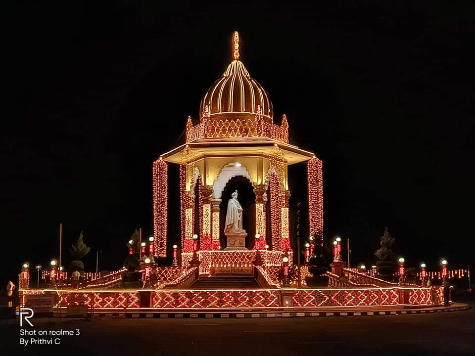
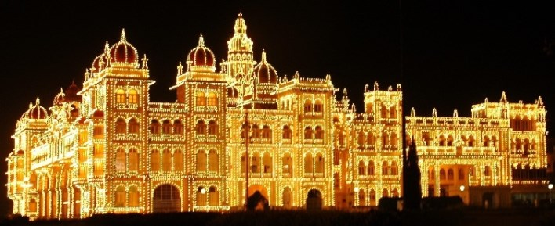
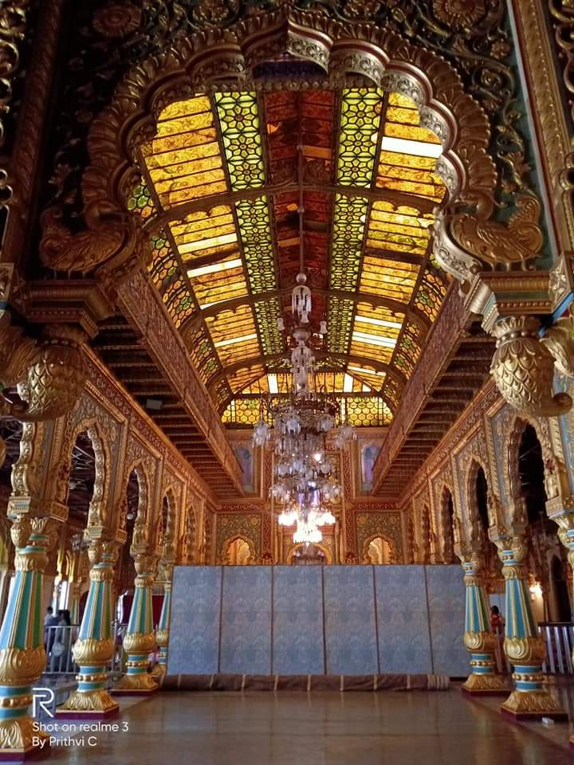
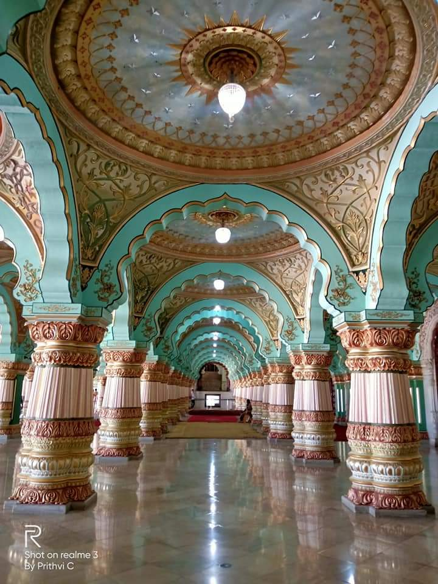
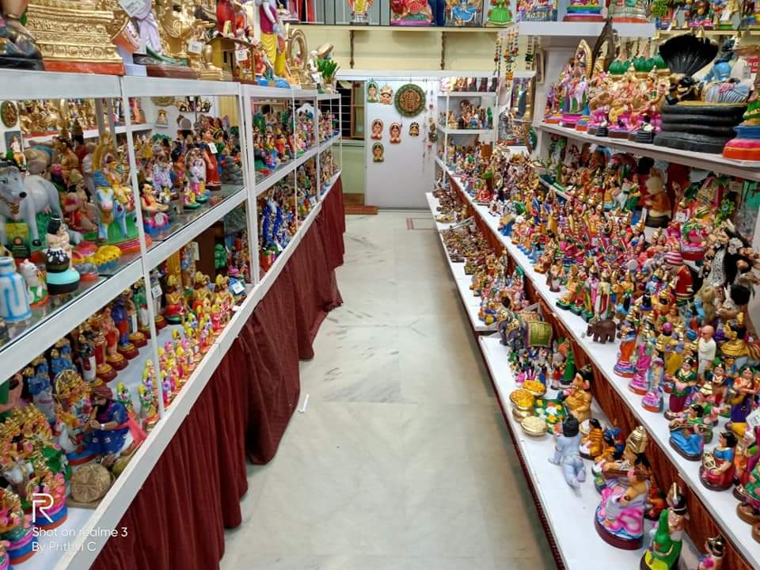
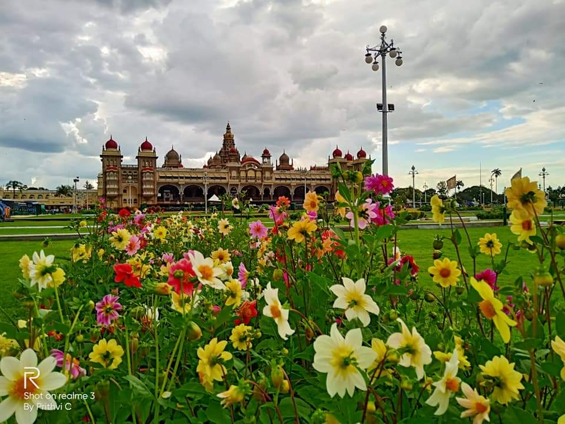
Mysore Dasara is the Nadahabba (state festival) of the state of Karnataka in India. It is a 10-day festival, starting with nine nights called Navaratri and the last day being Vijayadashami. The festival is observed on the tenth day in the Hindu calendar month of Ashvin, which typically falls in the Gregorian months of September and October. The Hindu festival of Dasara, Navratri and Vijayadashami celebrates the victory of good over evil. It was the day in the Hindu legends when Goddess Chamundeshwari (Durga) killed the demon Mahishasura. Mahishasura is the demon whose slaying by the Goddess gave the city the name Mysuru. The 10 - day festival include many cultural programmes, flower show, exhibition, wrestling, royal rituals, bombe mane(House of dolls), city lightings, The magnificent dasara procession and torch parade. For more details check local newspaper.
Mysore Silk
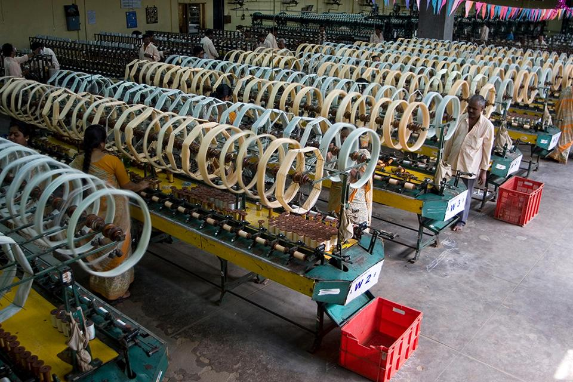
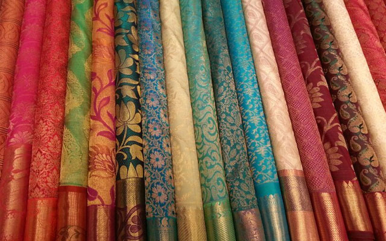
Karnataka produces 9,000 metric tons of mulberry silk of a total of 20,000 metric tons of mulberry silk produced in the country, thus contributing to nearly 45% of the country's total mulberry silk. In Karnataka, silk is mainly produced in the Mysore district. It is a patent registered product under KSIC. KSIC is an owner of the Mysore Silk brand. The growth of the silk industry in the Kingdom of Mysore was first initiated during the reign of Tipu Sultan nearly 1780-1790AC. Later it was hit by a global depression, and competition from imported silk and rayon. Mysore silk is produced by the Karnataka Silk Industries Corporation Limited (KSIC). The factory was founded in 1912 by Sri Nalvadi Krishnaraja Wodeyar, the Maharaja of Mysore. Initially, the silk fabrics were manufactured & supplied to meet the requirements of the royal family and ornamental fabrics to their armed forces. After India gained independence, the Mysore State Sericulture Dept. took control of the silk weaving factory. In 1980, the factory was handed over to KSIC, a government of Karnataka industry. Today, products include silk sarees, shirts, kurta's, silk dhoti, and neckties. Mysore silk has also received geographical identification.
Location
Mysore Sandal Soap
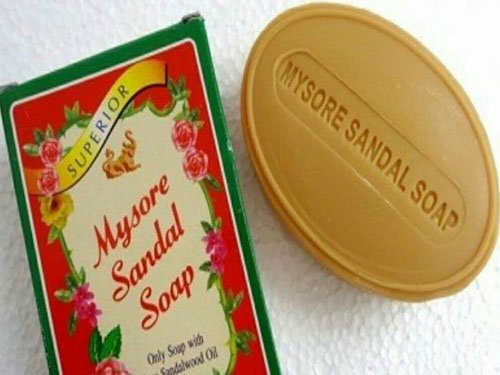
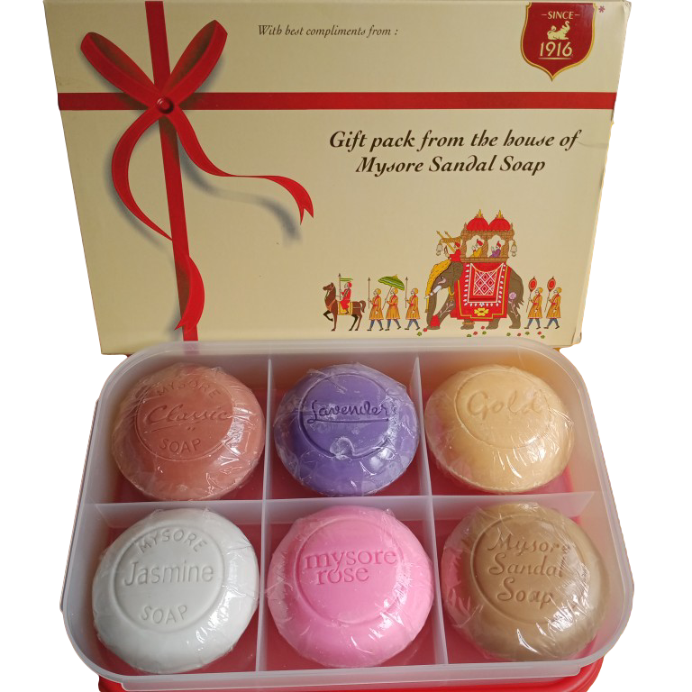
Mysore Sandal Soap is a brand of soap manufactured by the Karnataka Soaps and Detergents Limited (KSDL), a company owned by the government of Karnataka. This soap has been manufactured since 1916, when Krishna Raja Wadiyar IV, the king of Mysore, set up the Government Soap Factory in Bangalore. In 2006, Mahendra Singh Dhoni, the Indian cricketer was selected as the first brand ambassador of the Mysore Sandal Soap. In the early 20th century, the Mysore Kingdom in India was one of the largest producers of sandalwood in the world. During the First World War, large reserves of sandalwood were left over because they could not be exported due to the war. To make good use of these reserves, Nalvadi Krishnaraja Wodeyar, the king of Mysore, established the Government Soap Factory in Bangalore. This factory, which was set up in 1916, started manufacturing soaps under the brand name Mysore Sandal Soap using sandalwood oil as the main ingredient. A factory to distill sandalwood oil from the wood was set up at Mysore in the same year. The company has since diversified, and manufactures incense sticks, talcum powder, and detergents, apart from soaps.
Location
Mysore Pak
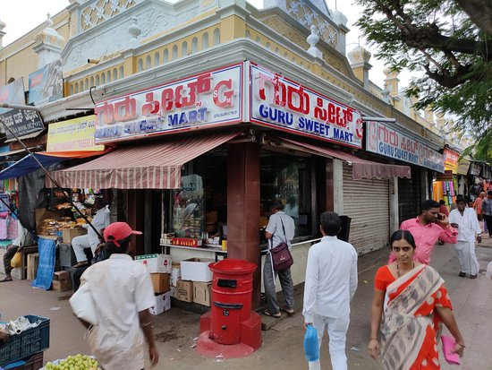
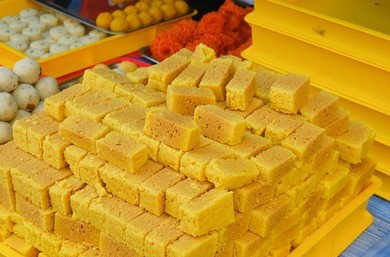
Mysore pak (Kannada: ಮೈಸೂರು ಪಾಕ) is an Indian sweet prepared in ghee. It originated in the city of Mysuru, one of the major cities in the Indian state of Karnataka. It is made of generous amounts of ghee, sugar, gram flour, and often cardamom. The texture of this sweet is similar to a buttery and dense cookie.The origin of the dish is credited to his chief chef, Kakasura Madappa, who had not made any dessert. Mysore Pak is one of the signature sweets of the Karnataka. This sweet is available everywhere and many are involved in its preparation. But the authentic Mysore Pak is available only at a sweet stall located near the Devaraja Market in Mysore called Guru Sweets. This sweet stall belongs to the family of a chef who first discovered the Mysore Pak nearly 100 years ago. The History Mysore Pak – The Birth Of A Royal Delicacy. According to Kumar, one of the partners of Guru Sweets, the Mysore Pak was first prepared by his great grandfather Kakasura Madappa. It was Krishnaraja Wadiyar IV who named it as the Royal Sweet Mysore Pak. Like everything else, the history of Mysore Pak also involves an accidental discovery.
Location
Mysore Mallige(Jasmine)
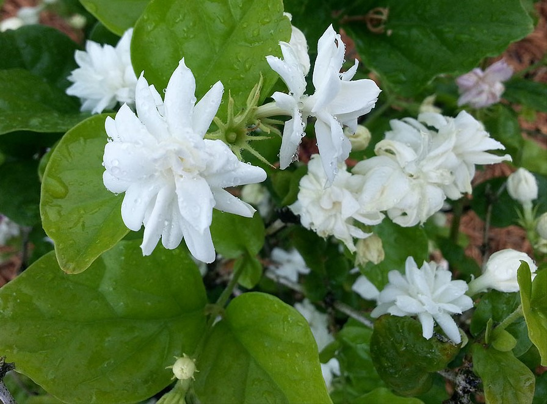
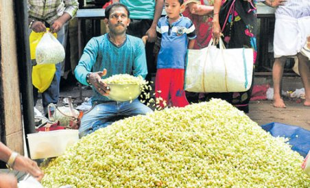
"Mysore mallige" redirects here. For the book by K. S. Narasimhaswamy named after the flower, see Mysooru Mallige. For the Kannada film, see Mysore Mallige (film). For the pornographic film, see Mysore Mallige Scandal.
Jasmine is considered the queen of flowers and is called the "Belle of India" or the "Queen of fragrance" as it is exquisitely scented to soothe and refresh. In different parts of India it is called by different name - Mogra, Motia, Chameli, Malli puvvu, Jaati, Mallige, Juhi, Mogra or Moonlight in the grove. It is reported that there are 300 varieties of jasmine. It is also stated that jasmine crossed the seas - from Asia to Europe, landing first along the Mediterranean Sea, conquering Greece and Turkey, reaching Western Europe through Spain, then France and Italy and finally landing in England in the latter part of the 17th century. Several species of jasmine are grown in Karnataka. Mysore Mallige is the most popular among the three varieties of Jasmine endemic to Karnataka; the other two varieties being the Hadagali Mallige and Udupi Mallige. Famed worldwide for their fragrance, all the three flower varieties have been patented and registered under Intellectual Property Right. Madurai, a city in Tamil Nadu is famous for its Jasmine production, where it is named Madurai Malli.
Location